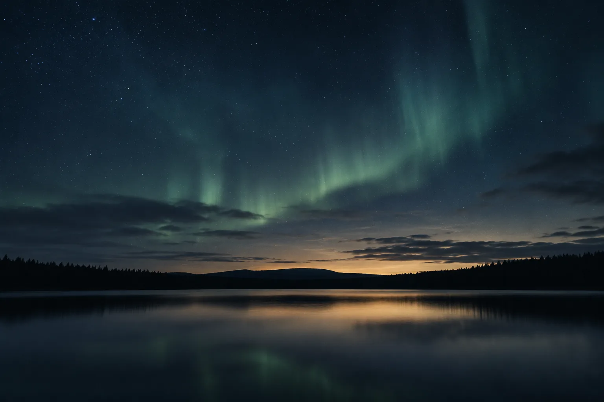

Mental
Face fears. Explore psychology and the conscious mind.

Our lens
Face fears. Explore psychology and the conscious mind.
Diet. Sleep. Movement.
Explore meaning, the subconscious, and deeper questions.
Love. Friendship. Community.
Relief & roots
Sometimes easing a symptom gives us room to go deeper. We care about relief—and about understanding what lies at the root.